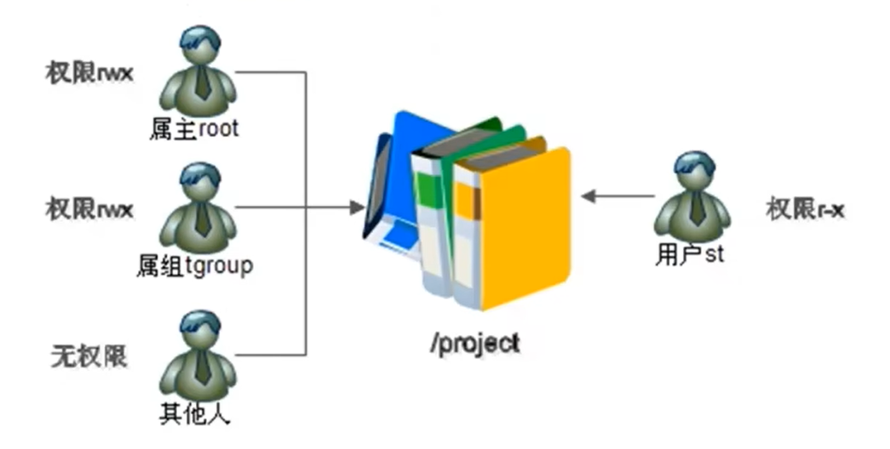
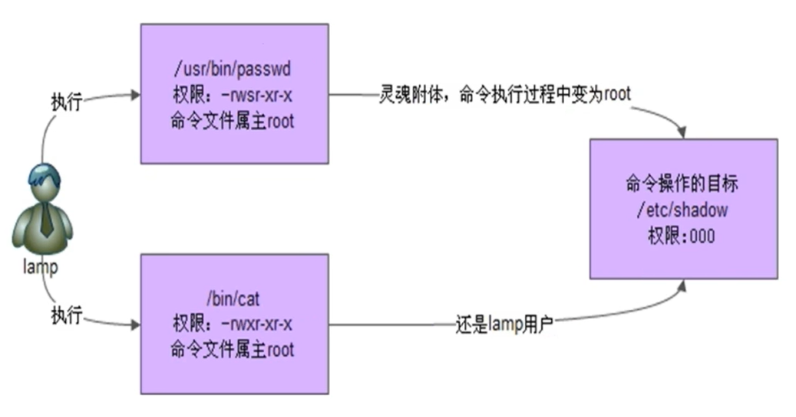

# 权限管理
# ACL 权限
# ACL 权限简介
ACL 的全称是 Access Control List (访问控制列表) ，一个针对文件 / 目录的访问控制列表。它在 UGO 权限管理的基础上为文件系统提供一个额外的、更灵活的权限管理机制。它被设计为 UNIX 文件权限管理的一个补充。ACL 允许你给任何的用户或用户组设置任何文件 / 目录的访问权限。
ACL 是用来解决所有者、所属组、其他人三个身份不足以满足需求的情况下的权限控制。

# 查看分区 ACL 权限是否开启
语法： dumpe2fs -h /dev/sda3
#dumpe2fs 命令是查询指定分区详细文件系统信息的命令
选项：
-h 仅显示超级块中信息，而不显示磁盘块组的详细信息
# 临时开启分区 ACL 权限
语法： mount -o remount,acl /
#重新挂载根分区，并挂载加入 acl 权限
# 永久开启分区 ACL 权限
修改 /etc/fstab 文件，之后重新用 mount -o remount / 命令重新挂载文件系统或重启动系统，使修改生效。
# 查看与设定 ACL 权限
查看 ACL 命令
语法： getfacle 文件名
#查看 acl 权限
设定 ACL 权限的命令
语法： setfacl 选项 文件名
选项：
-m 设定 ACL 权限
-x 删除指定的 ACL 权限
-b 删除所有的 ACL 权限
-d 设定默认 ACL 权限
-k 删除默认 ACL 权限
-R 递归设定 ACL 权限
# 最大有效权限与删除 ACL 权限
最大有效权限 mask
mask 是用来指定最大有效权限的。如果我给用户赋予了 ACL 权限，是需要和 mask 的权限 “相与” 才能得到真正的用户权限。
修改最大有效权限
语法： setfacl -m m:rx 文件名
#设定 mask 权限为 r-x，使用 “m: 权限” 格式
删除 ACL 权限
语法： setfacl -x u:用户名 文件名
#删除指定用户的 ACL 权限
语法： setfacl -x g:组名 文件名
#删除指定用户组的 ACL 权限
语法： setfacl -b 文件名
#会删除文件的所有的 ACL 权限
# 默认 ACL 权限和递归 ACL 权限
递归 ACL 权限
- 递归是父目录在设定 ACL 权限时，所有的子文件和子目录也会拥有相同的 ACL 权限。
setfacl -m u:用户名:权限 -R 文件名
默认 ACL 权限
- 默认 ACL 权限的作用是如果给父目录设定了默认 ACL 权限，那么父目录中所有新建的子文件都会继承父目录的 ACL 权限。
setfacl -m d:u:用户名:权限 文件名
# 文件特殊权限
# SetUID
SetUID 的功能
- 只有可以执行的二进制程序才能设定 SUID 权限
- 命令执行者要对该程序拥有 x（执行）权限
- 命令执行者在执行该程序时获得该程序文件属主的身份（在执行程序的过程中灵魂附体为文件的属主）
- SetUID 权限只在该程序执行过程中有效，也就是说身份改变只在程序执行过程中有效
- passwd 命令拥有 SetUID 权限，所以普通用户可以修改自己的密码
[root@localhost ~]# ll /usr/bin/passwd | |
-rwsr-xr-x. 1 root root 27856 Apr 1 2020 /usr/bin/passwd |
- cat 命令没有 SetUID 权限，所以普通用户不能查看 /etc/shadow 文件内容

设定 SetUID 的方法
- 4 代表 SUID
- chmod 4755 文件名
- chmod u+s 文件名
取消 SetUID 的方法
- chmod 755 文件名
- chmod u-s 文件名
危险的 SetUID
- 关键目录应严格控制写权限。比如 “/”、“usr” 等
- 用户的密码设置要严格遵守密码三原则
- 对系统中默认应该具有 SetUID 权限的文件作一列表，定时检查有没有这之外的文件被设置了 SetUID 权限
# SetGID
SetGID 针对文件的作用
- 只有可执行的二进制程序才能设置 SGID 权限
- 命令执行者要对该程序拥有 x（执行）权限
- 命令执行在执行程序的时候，组身份升级为该程序文件的属组
- SetGID 权限同样只在该程序执行过程中有效，也就是说组身份改变只在程序执行过程中有效
SetGID 针对目录的作用
- 普通用户必须对此目录拥有 r 和 x 权限，才能进入此目录
- 普通目录在此目录中的有效组会变成此目录的属组
- 若普通用户对此目录拥有 w 权限时，新建的文件的默认属组时这个目录的属组
设定 SetGID
- 2 代表 SGID
- chmod 2755 文件名
- chmod g+s 文件名
取消 SetGID
- chmod 755 文件名
- chmod g-s 文件名
# Sticky BIT
SBIT 粘着位作用
- 粘着位目前只对目录有效
- 普通用户对该目录拥有 w 和 x 权限，即普通用户可以在此目录拥有写入权限
- 如果没有粘着位，因为普通用户拥有 w 权限，所以可以删除此目录下所有文件，包括其他用户建立的文件。一旦赋予了粘着位，除了 root 可以删除所有文件，普通用户就算拥有 w 权限，也只能删除自己建立的文件，但是不能删除其他用户建立的文件
设置与取消粘着位
- 设置粘着位
- chmod 1755 目录名
- chmod o+t 目录名
- 取消粘着位
- chmod 777 目录名
- chmod o-t 目录名
# 文件系统属性 chattr 权限
# chattr 命令格式
语法： chattr [+-=] [选项] 文件或目录名
+: 增加权限
-： 删除权限
=： 等于某权限
选项：
- i：如果对文件设置 i 属性，那么不允许对文件进行删除、改名，也不能添加和修改数据；如果对目录设置 i 属性，那么只能修改目录下文件的数据，但不允许建立和删除文件。
- a：如果对文件设置 a 属性，那么只能在文件中添加数据，但是不能删除也不能修改数据；如果对目录设置 a 属性，那么只允许在目录中建立和修改文件，但是不允许删除
# 查看文件系统属性
语法： lsattr 选项 文件名
选项：
-a 显示所有文件和目录
-d 若目标是目录，仅列出目录本身的属性，而不是子文件的
# 系统命令 sudo 权限
# sudo 权限
- root 把本来只能超级用户执行的命令赋予普通用户执行
- sudo 的操作对象是系统命令
# sudo 使用
语法： visudo
#实际修改的是 /etc/sudoers 文件
root ALL=(ALL) ALL
#用户名 被管理主机的地址 =(可使用的身份) 授权命令（绝对路径）
%wheel ALL=(ALL) ALL
#% 组名 被管理主机的地址 =(可使用的身份) 授权命令（绝对路径）
授权 sc 用户可以重启服务器
[root@localhost ~]# visudo | |
sc ALL= /sbin/shutdown -r now |
普通用户执行 sudo 赋予的命令
root@localhost ~]#su -sc | |
[sc@localhost ~]$ sudo -l | |
#查看可用的 sudo 命令 | |
sc@localhost ~]$ sudo /sbin/shutdown -r now |